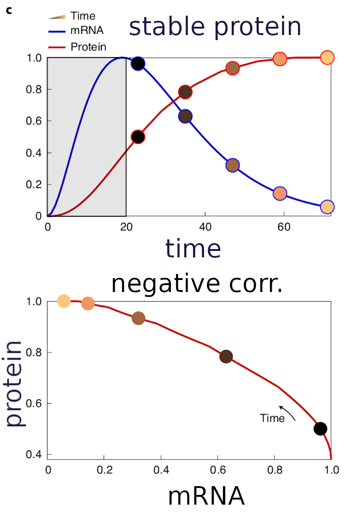

Spatial discordances between mRNAs and proteins in the intestinal epithelium
QBC JC
Alex Lee
Single cell transcriptomic approaches have dramatically increased our ability to characterize cellular phenotypes

UMAP of 400,000 cell scRNA-seq in mouse motor cortex
scRNA-seq data acts as a proxy for the functional information in the cellular proteome
How correspondent are protein and RNA-level measurements?
What are the instances where protein and transcriptomic
measurements are
discordant?
Hypothesis: discordance between RNA and protein is a function of protein stability

Proteins that are degraded or
secreted
quickly need to be
remade:
high
mRNA/protein correlation
Proteins that are not degraded or secreted:
low
mRNA/protein correlation